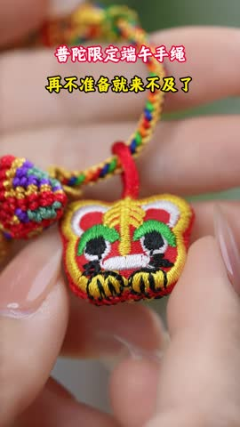
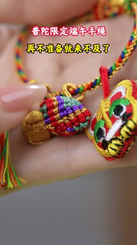
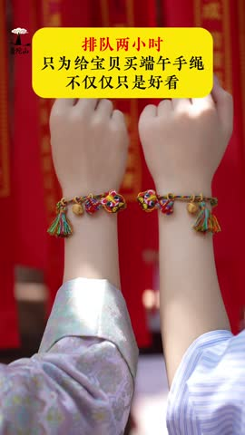
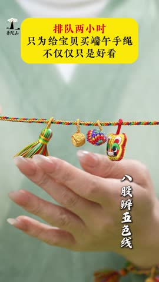
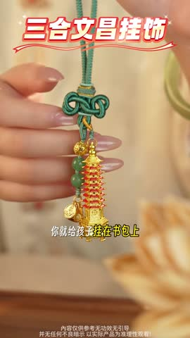
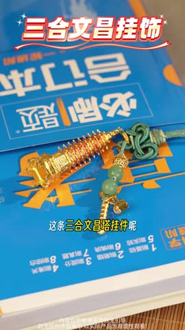
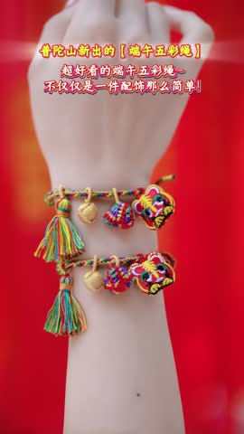
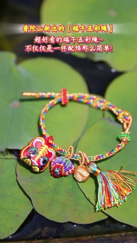

🎬Top5 素材关键帧拆解5/5 条已抽帧 · 6 帧对应 A→F 脚本节奏
TOP1 [年香福绕]普陀直发文创新款小老虎宝宝手工编织绳端午节五彩绳亲子 · 普陀禅海文创阁 CTR 1.96%|3s完播 25.2%|播放 3.5s
B产品工艺展示3-12s

C使用场景演示12-30s
D寓意文化解读30-50s💡 脚本创意拆解与落地建议：该素材为端午安康亲子款小老虎五彩手绳。采用“传统端午民俗+温情亲子”的意境穿搭逻辑。开篇（0-3s）以空灵普陀钟声和碧海蓝天视觉带入，营造纯净祈福的高档文化体验。中段（3-30s）特写聚焦精美木雕小老虎挂件的精微雕刻细节、天然草木染彩线的多重股线手工编织质感，展现其传统匠心温度；亲子模特实戴，手臂紧扣，展示端午民俗防五毒、保平顺的强情绪反差。后半段（30s-65s）结合画面深入解读“小老虎辟邪、五色线纳福”的节日内涵，提供普陀实体店面资质与快递出库单进行高信用背书。收尾（65s+）赠送避邪福包、多色精美端午礼盒，超高性价比推动全网宝妈及国学客群快速拼单抢购。
落地建议：1. 开篇3秒用“给宝宝的端午第一份守护”作为文字黄金钩子，能大幅捕获年轻宝妈的留存。2. 针对礼品定位，可在片尾重点演示古风木盒包装与香囊福袋附赠，体现高品质送礼心智。
⚡ WorkRally 视频生成脚本
🚀 腾讯智影 近景镜头伴随着袅袅香烟，微距拍摄博主双手转动盘玩『[年香福绕]普陀直发文创小老虎宝宝手』的特写，木质/玉石珠身在柔和打光下散发着温润典雅的幽光。第1.5秒切至博主身穿新中式素雅茶服，手戴珠串合十祈福，神情宁静安详，画面充满国潮禅意。配音用悠扬空灵的女声说『浮躁的时候戴上它，宁心静气，福气满满！』。第2.5秒画面下方弹出古典隶书大字『大师监制 诸事顺意』。节奏舒缓解压，以高质感国潮视听和【国风民俗转运钩子】让观众产生强烈心理共鸣并停留观看。
🎙️ 爆款口播文案（前 10s · 基于原片 ASR 转写后改写，可直接复用做配音/字幕脚本）：
最小时光，小小的我还在老地方﹐。
TOP2 [年香福绕]普陀直发文创新款小老虎宝宝手工编织绳端午节五彩绳亲子 · 普陀禅海文创阁 CTR 2.97%|3s完播 59.2%|播放 6.3s

C使用场景演示12-30s
D寓意文化解读30-50s💡 脚本创意拆解与落地建议：该素材为普陀禅海文创阁的亲子款手工编织五彩绳端午节小老虎手绳。采用经典的“文化意境+工艺传承”叙事逻辑。开篇（0-3s）以禅意满满的普陀风景和梵音静心的视觉钩子快速切入，营造庄重典雅的文化氛围。中段（3-30s）聚焦于非遗手工编织细节和精美木雕小老虎的近景特写，立体展示五彩绳的细腻工艺与高端质感；随后切入亲子佩戴的温馨家庭场景，直击家长为宝宝祈福、保平安的真切情感痛点。后半段（30s-65s）深入解读“老虎避邪、五彩纳福”的传统端午民俗寓意，并巧妙融入普陀直发的物流发货单和实体店画面，建立强烈的信任背书。收尾阶段（65s+）以限时买赠福利和端午安康的精美礼盒包装为利益钩子，高性价比引导父母及年轻家庭客群快速抢购。
落地建议：1. 开篇3秒增加快速切绳或普陀寺庙钟声的音画同步，增强完播率。2. 突出展示礼盒包装的细节，凸显送礼体面属性，提高客单价。
⚡ WorkRally 视频生成脚本
🚀 腾讯智影 近景镜头伴随着袅袅香烟，微距拍摄博主双手转动盘玩『[年香福绕]普陀直发文创小老虎宝宝手』的特写，木质/玉石珠身在柔和打光下散发着温润典雅的幽光。第1.5秒切至博主身穿新中式素雅茶服，手戴珠串合十祈福，神情宁静安详，画面充满国潮禅意。配音用悠扬空灵的女声说『浮躁的时候戴上它，宁心静气，福气满满！』。第2.5秒画面下方弹出古典隶书大字『大师监制 诸事顺意』。节奏舒缓解压，以高质感国潮视听和【国风民俗转运钩子】让观众产生强烈心理共鸣并停留观看。
🎙️ 爆款口播文案（前 10s · 基于原片 ASR 转写后改写，可直接复用做配音/字幕脚本）：
好多人排队。我买到最后一个了。现在北京来了。哦，北京来了。一定要带一个吧?没有啊。那比我们还要快。没有。你所求都能入。
TOP3 【麦玲玲设计】金榜题名 新文昌塔文昌笔三合生肖吊坠 逢考过男女生石英质玉麦玲… · 单吊坠 CTR 2.07%|3s完播 30.7%|播放 4.9s
A文化意境开篇0-3s
B产品工艺展示3-12s

C使用场景演示12-30s
D寓意文化解读30-50sE信任背书50-65s
F促销引导65s+
💡 脚本创意拆解与落地建议：该素材为麦玲玲专属定制的“金榜题名”文昌塔文昌笔吊坠。视频采取经典的“大师背书+精准痛点”种草模式。开篇（0-3s）以祥云书香等传统文化意境画面和高考/考研等试卷场景作为视觉钩子，瞬间吸引有考试焦虑的中高考学生、家长及考公考研群体。中段（3-30s）通过高亮射灯特写展示石英质玉文昌笔及生肖吊坠的晶莹通透与温润雕工，放大产品质感；并演示学生在书桌前、考场上手戴或佩戴胸前的多重使用场景，极具代入感。后半段（30s-65s）结合画面着重进行“笔跃龙门、文昌高照”的逢考必过寓意解读，重点展示麦玲玲大师出镜、手持证书和独家定制包装等元素，建立强权威度背书。收尾（65s+）推出买吊坠送专属福袋、限时特惠等福利，通过高性价比话术促成转化。
落地建议：1. 建议在开篇1-2秒使用“逢考必过”或“金榜题名”大字幕，快速聚焦目标家长和考生群体。2. 中段可加入吊坠在阳光下的自然通透度实拍，避开棚拍，增强真实感。
⚡ WorkRally 视频生成脚本
🚀 腾讯智影 近景镜头微距特写『【麦玲玲设计】金榜题名』的极佳材质反光与重工雕琢细节，画面极富奢华高级质感。第1.5秒上身佩戴，镜头前后拉伸，展现出佩戴后对颜值、气色或穿搭的瞬间提升巨大反差。配音用轻快昂扬的声音说『买它不踩坑！超高颜值和极高性价比，自用送礼都体面！』。第2.5秒下方弹出金色字幕『限时特惠 工厂放利』。节奏紧凑，以【高颜值反差】前3秒黄金视觉阻断用户划走。
🎙️ 爆款口播文案（前 10s · 基于原片 ASR 转写后改写，可直接复用做配音/字幕脚本）：
为什么别人家的孩子总是高分，你家孩子再努力也追不上，其实啊就是开窍两个字，这条九成的文昌塔挂件，你就给孩子挂在书包上就行了。
TOP4 创意复古龙年钥匙扣挂件十二生肖 · 时尚饰品 CTR 36.58%|3s完播 53.0%|播放 48.0s
A文化意境开篇0-3s
B产品工艺展示3-12s
C使用场景演示12-30s
D寓意文化解读30-50s
E信任背书50-65s
F促销引导65s+
💡 脚本创意拆解与落地建议：该素材为创意复古龙年钥匙扣生肖挂件。采取“国潮设计+岁岁平安好寓意”的性价比配饰种草。开篇（0-3s）还原年轻人“找不到合心意国潮挂件”、“送礼自用没有新意”的审美焦虑和生活场景。中段（3-30s）微距特写黄铜龙年雕花钥匙圈的饱满质感、国风红色刺绣祈福袋的细腻针脚（走线如行云流水），放大手工制作的卓越工艺；将钥匙挂载、包包配搭，展示其作为钥匙扣或包挂的精致使用和颜值提升。后半段（30s-65s）解读“龙腾祥瑞、富贵安康”的国潮文化赋能，出具非遗工艺传承背书及用户一键回购证言建立信任。收尾（65s+）用限时一口平价、拍下多色组合立省作为超强高性价比杠杆，瞬间收割年轻客群。
落地建议：1. 可将“博主用手掌抚摸挂件，挂件黄铜质感在柔光下发光”作为3秒黄金钩子，能拉长留存率。2. 在尾部着重增加国风礼盒、红色福袋的手提开箱画面，拉满小而美的情感礼赠属性。
⚡ WorkRally 视频生成脚本
🚀 腾讯智影 近景镜头微距特写『创意复古龙年钥匙扣挂件十二生肖』的极佳材质反光与重工雕琢细节，画面极富奢华高级质感。第1.5秒上身佩戴，镜头前后拉伸，展现出佩戴后对颜值、气色或穿搭的瞬间提升巨大反差。配音用轻快昂扬的声音说『买它不踩坑！超高颜值和极高性价比，自用送礼都体面！』。第2.5秒下方弹出金色字幕『限时特惠 工厂放利』。节奏紧凑，以【高颜值反差】前3秒黄金视觉阻断用户划走。
🎙️ 爆款口播文案（前 10s · 基于原片 ASR 转写后改写，可直接复用做配音/字幕脚本）：
姐妹们听好了！注意，高层决策组刚刚进入紧急确认阶段。当前状态提示，本次专属预制已进入最终交付节点，监测到整个制作链路已经全部完成。
TOP5 [年香福绕]普陀直发文创新款小老虎宝宝手工编织绳端午节五彩绳亲子 · 普陀禅海文创阁 CTR 2.08%|3s完播 30.7%|播放 4.1s

B产品工艺展示3-12s
C使用场景演示12-30sD寓意文化解读30-50s
💡 脚本创意拆解与落地建议：视频洋溢着传统端午端祥的和美禅意，开篇以可爱宝宝佩戴与手工编制画面引入，立足“阖家安康、福佑孩子”的情感纽带。3-12s聚焦极具中国红的五彩金丝，对精致编织的文创小老虎银锁挂件进行光圈虚化的超清特写，萌趣与质感兼备。亲子佩戴部分呈现温情日常，将文创神韵和福报心智渲染得淋漓尽致，说服力极高。
落地建议：建议在第2s内前置“普陀直发、师傅开光”的特写镜头或红章礼盒，强化“福佑”信赖度。可在视频中部加入宝宝手腕出汗、皮质过敏的传统红绳痛点，用“天然优质彩丝防过敏不褪色”的实测实证，打败宝妈群体的线上选购疑虑。
⚡ WorkRally 视频生成脚本
🚀 腾讯智影 近景镜头伴随着袅袅香烟，微距拍摄博主双手转动盘玩『[年香福绕]普陀直发文创小老虎宝宝手』的特写，木质/玉石珠身在柔和打光下散发着温润典雅的幽光。第1.5秒切至博主身穿新中式素雅茶服，手戴珠串合十祈福，神情宁静安详，画面充满国潮禅意。配音用悠扬空灵的女声说『浮躁的时候戴上它，宁心静气，福气满满！』。第2.5秒画面下方弹出古典隶书大字『大师监制 诸事顺意』。节奏舒缓解压，以高质感国潮视听和【国风民俗转运钩子】让观众产生强烈心理共鸣并停留观看。